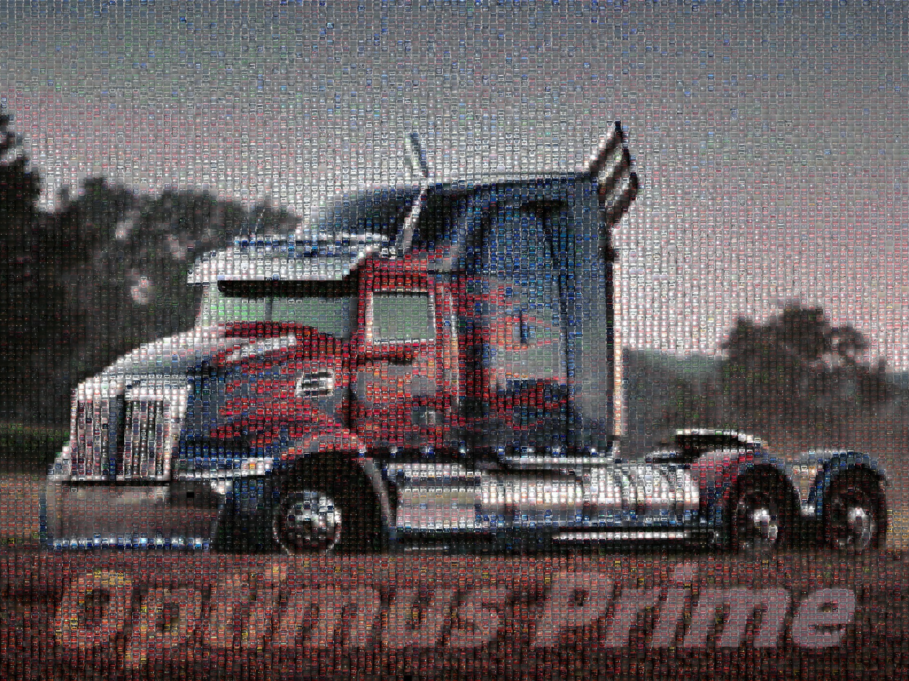
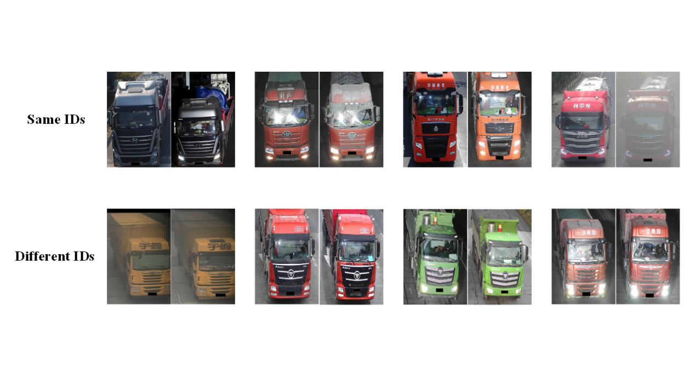

The Optimus Prime dataset is constructed by the Lab of Smart Data and Signal Processing, School of Informatics, Xiamen University (SmartDSP, XMU). Thanks for the data provided by Anhui Guolian Information Technology Co., Ltd. This dataset is captured in real-world highway scenarios by multiple surveillance cameras installed in several cities in China. All images are in 4K resolution and are captured from different camera viewpoints in front of big trucks. It collects a total of 130,994 images of 17,835 trucks, which are captured in a 24-hour-a-day uninterrupted manner. It is worth mentioning that truck images are reminiscent of the Transformers named in film and deep learning. Therefore, we name this dataset “Optimus Prime (Opri)”. The following figure shows sample images of the Opri dataset.


· The images can only be used for ACADEMIC PURPOSES. NO COMERCIAL USE is allowed.
· Copyright © the Lab of Smart Data and Signal Processing, School of Informatics, Xiamen University. All rights reserved.
You can download the agreement (pdf) from here. After filling it, please send the electrical version to our Email: kmustkzy@126.com (Subject: XMU-Opri-Agreement). Please send it through an academic or institute email-addresses such as xxx at xxx.edu.xx. Requests from free email addresses (outlook, gmail, qq etc) may be kindly refused. After confirming your information, we will send the download link and password to you via Email. You need to follow the agreement. You can see more details about Opri from here.